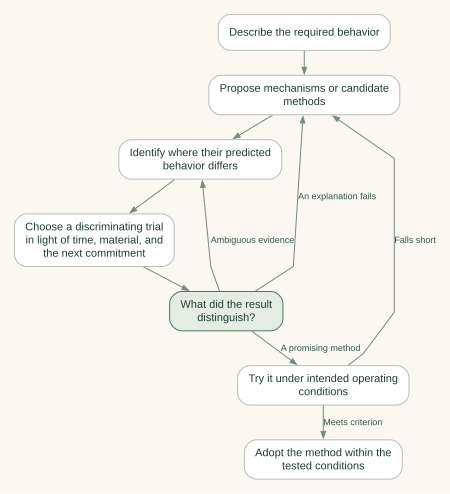

The Iron Man suit — inventing the means
In the fictional escape, the outcome is clear and the means have to be invented with what’s available. Imagine an arm joint that moves freely on the bench and binds when it carries the armor. Aura Pro puts the two trials side by side. The builder sets a load for a bench trial and agrees on the next test for each result. A repeatable bind settles that the fault can appear on the bench, so the builder inspects the joint under load. If it repeatedly moves freely, the builder checks the assembled mounting. If one run binds and the next moves freely under the same recorded load and setup, the builder has a reason to return to Discovery. What changed between runs? That answer governs whether either planned test will help.
The question
Starting condition. The intended outcome is clear enough to test, while the means of achieving it remain uncertain. Central question. What trial would most improve the next design decision?
Decision path


Output. A better method or a narrower uncertainty. A trial can succeed as an experiment even when its prototype fails at the intended task.
Related system capabilities
Field observation and evidence
Acquire the observation that can settle a physical question.
Reasoning and inquiry
Choose which question deserves attention and which method can answer it.
Verification and acceptance
Determine what a specific check establishes and who may accept the result.
Project memory and learning
Retain the reasons, evidence, and conditions that can improve a later decision.